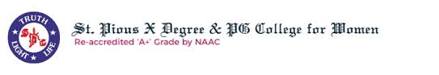
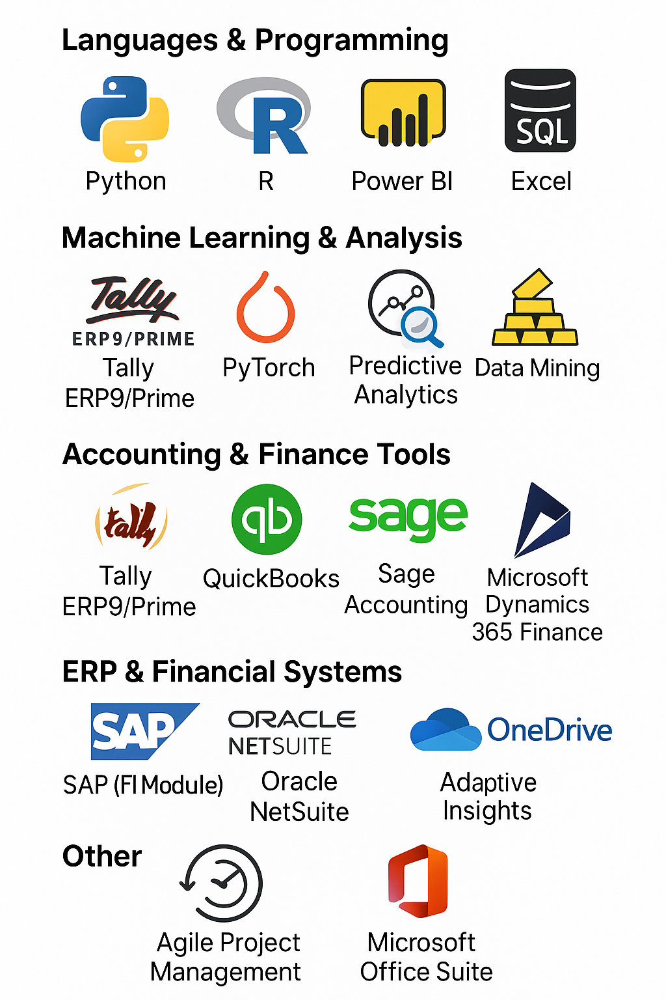

As a Business Analytics graduate student and University of North Texas graduate, I hold Bachelor's degrees in Commerce and Computer Applications. Maintaining a 4.0 GPA during undergraduate studies and 3.5 GPA in graduate studies, I combine practical knowledge in data analytics and enterprise technology systems. Skilled in Python, R, SQL, Tableau, Power BI, SAP, Oracle NetSuite, and Microsoft Dynamics 365. I balance strategic thinking and creativity through leadership, social outreach, and my national-level swimming experience, showcasing a blend of business intelligence, technical expertise, and value-driven approaches.
As a Master’s in Business Analytics student at the University of North Texas, I bring detailed-driven analysis and data interpretation skills. I use predictive analytics and business strategy development to extract precise insights, empowering organizational growth and strategic decision-making.
Master of Science in Business Analytics | GPA: 3.5 | Expected: Dec 2025
Key Courses: Data Visualization, Data Mining, Predictive Analysis, Business Statistics
Bachelor of Commerce in Computer Applications | GPA: 4.0 | Graduated: May 2023
Relevant Courses: Financial Planning and Performance, E-Commerce, IFRS, Business Statistics, Cost Accounting, Business Economics
Python, R, SQL
Tableau, Power BI, Excel
TensorFlow, PyTorch, Predictive Analytics, Data Mining
Tally ERP9/Prime, QuickBooks, Sage Accounting, TaxCalc
SAP (FI Module), Oracle NetSuite, Microsoft Dynamics 365 Finance
Google Sheets, OneDrive, Adaptive Insights
Agile Project Management, Microsoft Office Suite
Managed POS operations and customer order dispatch, reinforcing multitasking and reliability.
Participated in industrial awareness and entrepreneurial workshops focused on foundational business skills.
Provided mentorship and guidance to young students, fostering confidence and communication skills.